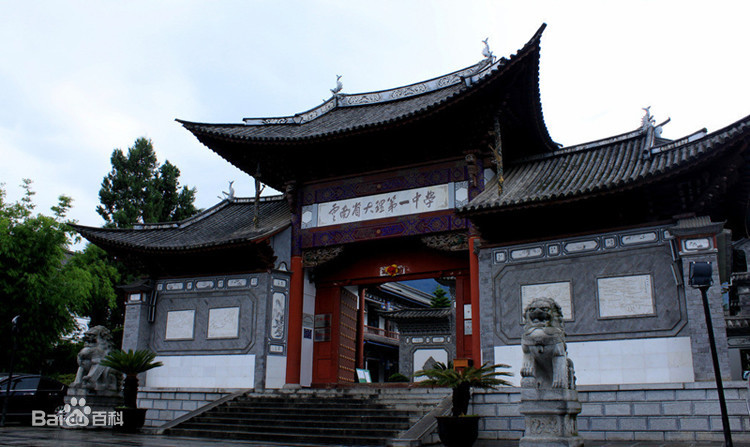
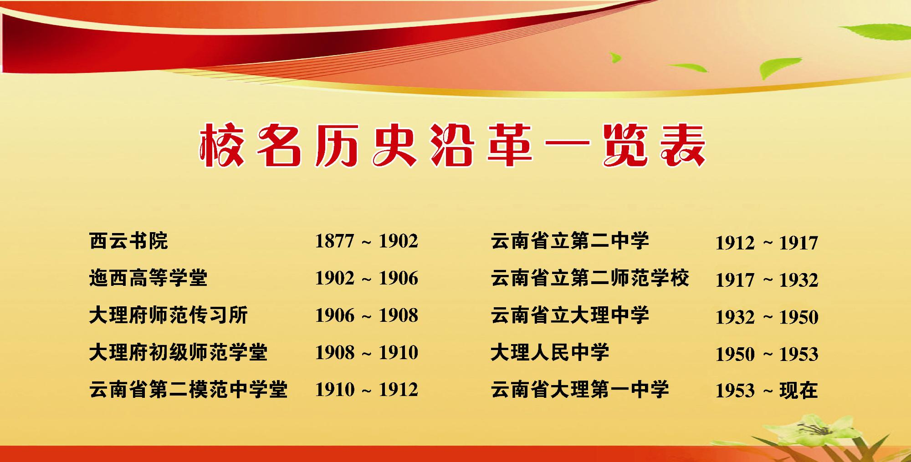
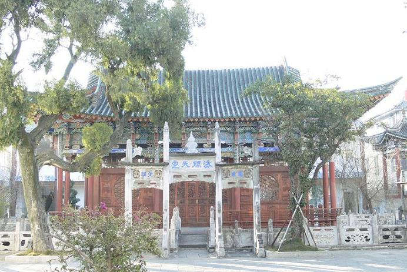

云南省大理市第一中学 官网：https://www.dlyz.cn/
学校简介：
云南省大理第一中学（大理一中）坐落于大理古城，校园内有州、市两级重点保护的西云书院旧址，有“种松碑”、“御碑”等著名碑刻，学校为云南省一级一等重点中学，成都军区国防生生源基地，电子科技大学优质生源基地。
云南省大理第一中学，前身为西云书院，始建成于1877年10月15日，至今已有133年的办学历史。学校坐落于大理古城，校园幽静，古色古香，绿树葱茏，繁花似锦。整个校园建筑体现了典型的白族建筑风格，有浓厚的文化底蕴，有良好的校风、教风、学风。 1951年，学校被定为云南省的重点中学，1993年7月，被省教委评为云南省一级三等完全中学；2000年4月，晋升为云南省一级二等完全中学，是省、州、市文明单位。2003-2008年，在省教育厅对全省一级完中教育教学质量综合考评中，大理一中先后荣获云南省一等奖第一名一次，二等奖（总排名前十名内）四次。2009年9月学校被国家教育部表彰为全国教育系统先进集体
优秀校友：
杰出校友：大理一中校友-百度量子计算研究所所长段润尧，２０１８年３月８日，百度成立量子计算研究所，开展量子计算软件和信息技术应用业务研究。段润尧回到北京，作为悉尼科技大学终身教授、量子软件和信息中心创办主任出任百度量子计算研究所所长。
周保中：1902年生，大理人，白族。原名奚李元。在我校肄业后入讲武堂，参加护法、北伐战争，1927年入党，“九一八”事变后，在东北领导抗日，先后任东北抗日联军第二路军总指挥，中共东北委员会书记，吉林省主席、解放军东北军区副司令员。建成国后任云南省人民政府副主席，中央国防委员会等职，1964病故。
李树楠：1936年出生地于云南腾冲。1951年毕业于大理一中高四班，同年考入华西医科大学药学系。现任大理医学院落教授、药学系主任，医学专家，新药“康复新”、“心脉龙注射液”、“肝龙胶本”发明者、获国家发明专利。
